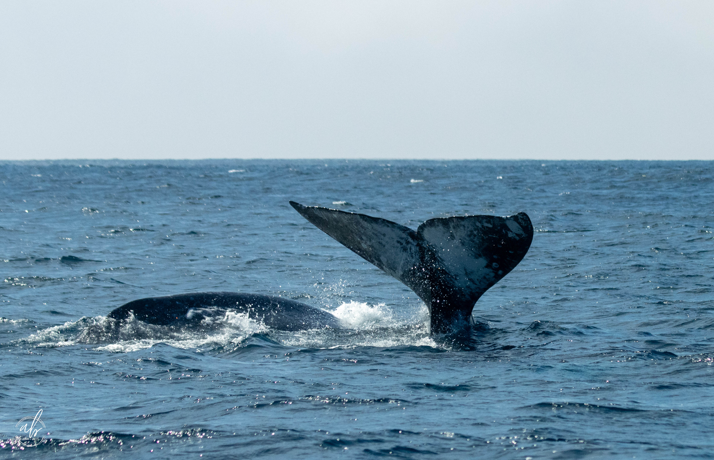

Executive Assistant Business Partner · Chief of Staff · San Diego, CA
Strategic executive partner and AI workflow architect — building the operating systems that let leaders do their best work, at Chief of Staff depth.
About Me
I'm a Strategic Executive Partner and AI workflow architect with more than 20 years supporting VP- and C-suite leaders in complex, fast-moving organizations. I ramp up fast, build a mental model of how an exec thinks, and operate independently with minimal direction — retaining context, anticipating needs, and closing loops before they open.
I operate at Chief of Staff depth: making decisions with business context, synthesizing information before anyone asks, and building systems that outlast any single task. I'm trusted with sensitive information, cross-functional relationships, and the judgment calls that don't come with instructions.
I've built and deployed a full AI-powered executive operating system — adopted across the EABP organization and presented at the internal AI Learning Lab. I don't just use AI tools; I architect them around how executives actually work.
Based in San Diego and open to remote, hybrid, or local opportunities in tech or business.
April R. Brauer
Executive Assistant Business Partner
I close loops before they become problems — and I build systems so there are fewer loops to close.
— April BrauerBeyond the Work
Outside of work, I'm most alive when I'm somewhere unexpected — camera in hand, watching a whale breach, or getting to know a new city (or a new animal).

Experience
Supporting VP of CG Assisted Commercialization (60+ person org) · Previously: VP of Core Tax & Monetization; EVP of Customer Success.
Sole support to the Port Auditor — appointed directly by the Board of Port Commissioners — with independent access to sensitive financial and operational information across the full Port.
AI & Automation
A full 90-day structured onboarding program I designed for new EABPs — because how well a new hire ramps shouldn't depend on luck, geography, or who they sit near. Built on three phases (Orient, Connect, Operate), a buddy system, and five scheduled touchpoints. At its center: a live Claude-powered AI assistant trained on eight knowledge modules covering the EABP craft framework, every tool and system, calendar philosophy, finance and spend, event planning, and a full acronym glossary.
Try the Ready Set Launch Assistant →Skills & Tools
Contact
I'm currently open to new Executive Assistant Business Partner and Chief of Staff opportunities — remote, hybrid, or San Diego-based. If you're looking for someone who operates at strategic depth, brings genuine AI fluency, and builds systems that outlast any single task, I'd love to connect.